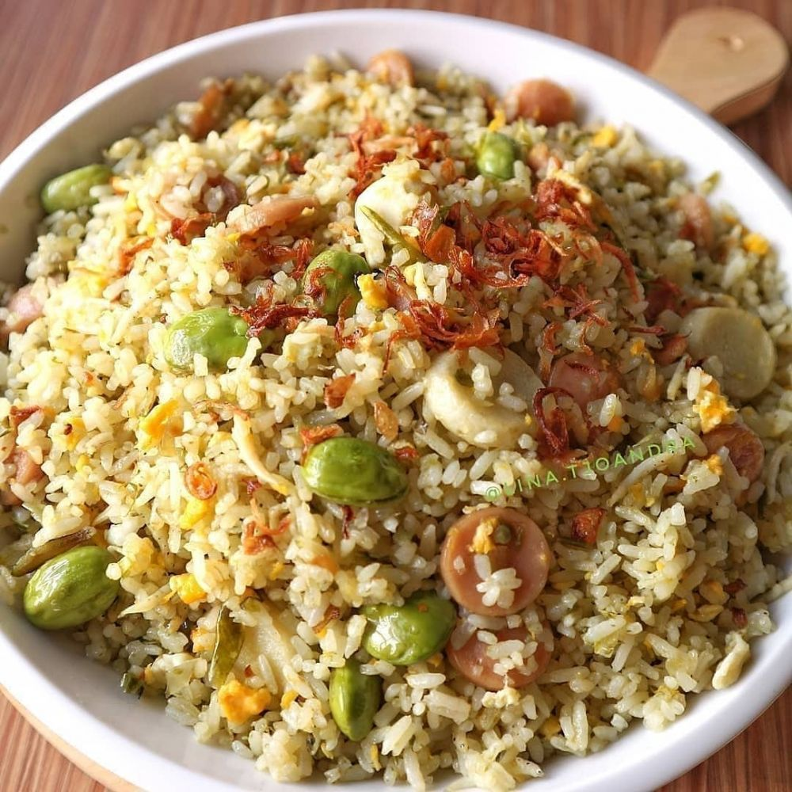

Kamis, 22 september 2020 15:11
Penulis: Nurul Wahida

Ilustrasi (credit: brilicious.brilio.net/Instagram.com/dapurfoody/
|
Cookpad - Nasi goreng menjadi salah satu hidangan khas indonesia yang terbuat dari olahan nasidengan bumbu rempah pilihan. Kombinasi bahan tambahan seperti telur, daging, kacang polong semakin menambah cita rasa nasi goreng nikmat untuk dikonsumsi. Cara membuat nasi goreng sederhana sangat mudah dipraktikkan di rumah dengan aneka resep pilihan. Nasi goreng cukup sering menjadi makanan sarapan favorit yang nikmat dikonsumsi. Selain mengenyangkan, kandungan karbohidrat dalam nasi goreng yang terbuat dari beras tersebut mampu membangkitkan energi tubuh untuk beraktivitas. Diantara kandungan satu porsi nasi goreng yakni seperti energi, karbohidrat, serat, protein, lemak, kalium seperti melansir dari fatsecret.co.id. Tak heran jika nasi goreng menjadi hidangan favorit dikonsumsi untuk sarapan. Selain itu nasi goreng bahkan cukup populer di kancah internasional hingga selebriti dunia mengenal hidangan khas indonesia satu ini. Hidangan ini umumnya disajikan dalam berbagai varian rasa berbeda mulai dari nasi goreng ayam, nasi goreng daging sapi, nasi goreng udang, nasi goreng jawa dan lain sebagainya. Cara membuat nasi goreng bahkan terbilang sangat praktis dan mudah dipraktikkan. Bahan-bahan yang digunakan untuk membuat nasi goreng tersebut cukup terjangkau dan umum ditambahkan dalam makanan. Sebut saja seperti bawang putih, bawang merah, cabai, lada, ketumbar, daun bawang menjadi bahan dasar paling sederhana untuk nasi goreng. Lalu bagaimana cara membuat nasi goreng sederhana? Adapun cara membuat nasi goreng sederhana terdapat dalam beberapa poin di bawah ini. Berikut 6 cara membuat nasi goreng sederhana yang bisa menjadi menu sarapan paling mudah dan mengenyangkan. 1. Nasi Goreng Sederhana(credit: cookpad.com/xander\'s kitchen/) Cara membuat nasi goreng sederhana dan bikin nagih salah satunya terdapat dalam resep berikut. Hidangan ini cukup mudah dipraktikkan dan cocok menjadi menu sarapan sebagai asupan pembangkit energi. Adapun cara membuat nasi goreng sederhana sebagai berikut bersumber dari cookpad.com oleh xander's kitchen. Bahan
Cara membuat nasi goreng sederhana:
2. Nasi Goreng Pedas Cabai Hijau (credit: brilicious.brilio.net/Instagram.com/reseprumahan.idn/)Cara membuat nasi goreng sederhana dengan varian pedas cabai hijau juga tak kalah menggugah selera. Terlebih bagi kalian yang menyukai hidangan pedas, nasi goreng ini bisa menjadi pilihan tepat. Adapun cara membuat nasi goreng pedas cabai hijau sebagai berikut seperti bersumber dari brilicious.brilio.net oleh akun instagram @reseprumahan.idn. Bahan
Cara membuat nasi goreng pedas cabai hijau:
Nah itulah 6 cara membuat nasi goreng sederhana dan bikin nagih cocok untuk sarapan. Kalian juga dapat berkreasi dengan aneka resep nasi goreng lainnya sesuai selera. Selamat mencoba. |

OSTAMARU 4.0 | Lahirnya Generasi Baru Aswaja |

JELANG ABAD KE-2, JAM'IYYAH NAHDLATUL ULAMA |